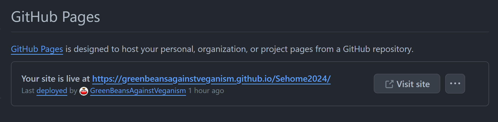

Refresher on using git:
You can look back at last week's agenda for a refresher on how to use Git. Let's practice this while we get our websites ready for launch!
- Open up Github Desktop and do a practice pull Ctrl+Shift+P. Unless you switched computers or did some edits from the github website, you shouldn't have any changes to pull, but it's a good habit to just pull every time before you start working.
- Open your project in VS Code or your preferred text editor and add some finishing touches to your website. Try to make something that will impress your friends/family! Remember that whatever you make will be available publicly on the internet for anyone to see, so make sure to be appropriate and to not share any information that is too personal.
- Once you are happy with your website for now, go to Github Desktop and commit your changes.
- Pull your project again just for practice. This isn't necessary when you are working alone, but it's a good habit to pull every time before you push in case someone else pushed their changes to the project while you were working.
- Push Ctrl+P your changes to update the remote repository with your changes.
Host your site with Github Pages:
- First we need to find your repository on the Github website. You can do this through the website, but the easiest way is to click View on Github in the desktop app.
- Now navigate to Settings.
- Click on Pages on the side bar. If you don't see the pages tab, this means you forgot to make your repository public last time and you should scroll down all the way to the bottom where you'll find the option to "Change repository visibility".
- To enable pages for your site, select the main branch, then hit save.

Once you hit save, you should see a message saying your website is being built.
This should take a minute or so, so keep refreshing the page until you see this message:
You can then click on Visit Site or go to the url: yourGithubUsername.github.io/yourRepositoryName to see your site!
Notes about hosting websites:
- Your website will automatically update whenever you push new changes to your remote repository.
- If you have strange issues with your site not updating or partially updating, it's probably because your browser has cached a previous version of your website and is loading that instead of the new one to save bandwidth. You can fix this in Chrome by opening up dev tools Ctrl+Shift+I, going to the Network tab and checking Disable Cache.
- Github Pages is free to use, and it comes with very few limits! You shouldn't use a Github Pages site to promote your business/sell things, to show disturbing or inappropriate content, or to collect any kind of sensitive information like passwords or user data. Other than that, go wild! You can read more about the terms of service here.